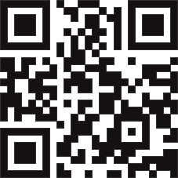

Що таке OkParking?
OkParking – зручний телеграм-бот, який допоможе запаркувати
ваше авто на приватних майданчиках Києва.
Це перше подібне рішення в Україні, яке відкриває перед водіями шлагбауми приватних парковок.
Власники приватних паркомісць можуть короткостроково здавати їх в оренду іншим водіям: у той момент, коли ви виїжджаєте, ваше паркомісце заробляє вам гроші.
Унікальний телеграм-бот OkParking допомогає вирішувати проблему нестачі паркомісць у Києві.
Це перше подібне рішення в Україні, яке відкриває перед водіями шлагбауми приватних парковок.
Власники приватних паркомісць можуть короткостроково здавати їх в оренду іншим водіям: у той момент, коли ви виїжджаєте, ваше паркомісце заробляє вам гроші.
Унікальний телеграм-бот OkParking допомогає вирішувати проблему нестачі паркомісць у Києві.
Переходь у ЧАТ-БОТ
для оренди паркомісця
або якщо бажаєш
здати
своє паркомісце в оренду

Скануй QR-код
або тицяй СЮДИ
Чому OkParking корисний для всiх?
У Києві запустили чат-бот, який допомагає орендувати та здавати приватні паркомісця
У Києві запрацював telegram-бот OkParking, який допомагає
орендувати та здавати місця на приватних паркінгах: у житлових комплексах, поруч із
бізнес-центрами, фітнес-студіями, салонами краси.
В Украине заработал чат-бот, который поможет арендовать и сдавать места на частных паркингах
В феврале заработал уникальный телеграм-бот OkParking, который
открывает перед всеми водителями шлагбаумы частных автопарковок.
OkParking — это удобный чат-бот, который предлагает две уникальные услуги: водителям
найти свободное место и запарковать их авто на частных паркингах, а владельцам
паркомест сдать в аренду на определенный срок свой свободный парковочный слот другим
водителям и заработать деньги.
В Україні запрацював
чат-бот, який допоможе орендувати та
здавати місця на приватних паркінгах
У лютому в Україні запрацював унікальний телеграм-бот OkParking,
який «відкриває» перед усіма водіями шлагбауми приватних автопарковок. OkParking —
це зручний чат-бот, який пропонує дві унікальні послуги: водіям знайти вільне місце
та запаркувати їхні авто на приватних паркінгах, а власникам паркомісць здати в
оренду на певний термін свій вільний паркувальний слот іншим водіям і заробити
гроші.
В Києві з’явилась можливість паркувати авто на приватних паркомісцях або здавати їх в оренду
Для виявлення вільних місць на паркінгах потрібно
скористатись
чат-ботом у Телеграмі.
У лютому запрацював унікальний телеграм-бот OkParking, який дозволяє шукати
вільні
паркомісця у приватних паркінгах.
Звичайно, не безкоштовно.
«Airbnb у сфері паркування»: в Україні з’явився чат-бот OkParking для оренди та «прокату» місць на приватних паркінгах (поки тільки у межах Києва)
У лютому запрацював телеграм-бот OkParking, який може стати у
пригоді українським автовласникам та автолюбителям. Він відкриває приватні парковки
перед всіма водіями та робить свій внесок у розв’язання проблем з нестачею
паркомісць.
З’явився чат-бот, який допомагає здавати в оренду місця на приватних паркінгах
В Києві запрацював Telegram-бот OkParking. Він пропонує дві
послуги: знайти вільне місце на приватних паркінгах і здати в оренду вільний
паркувальний слот іншим водіям.